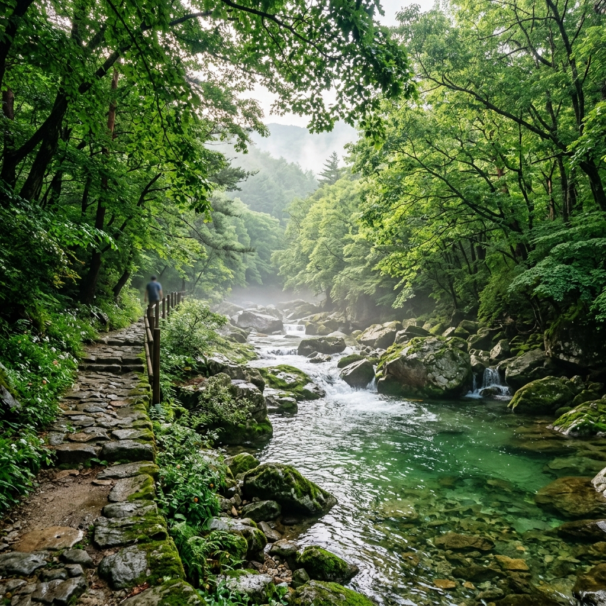
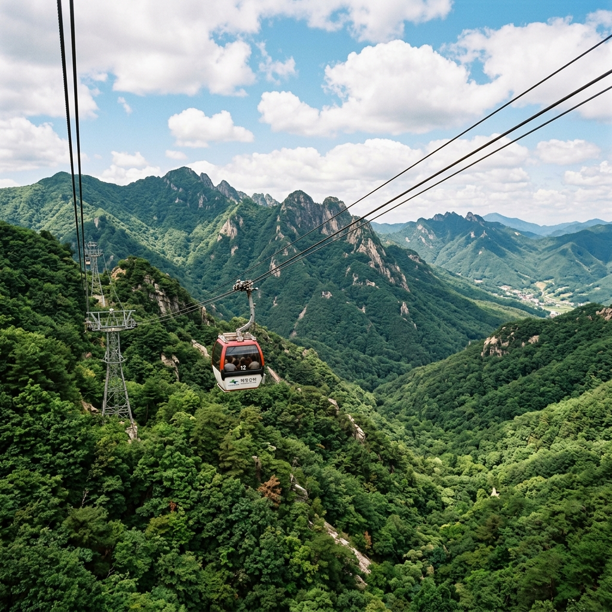
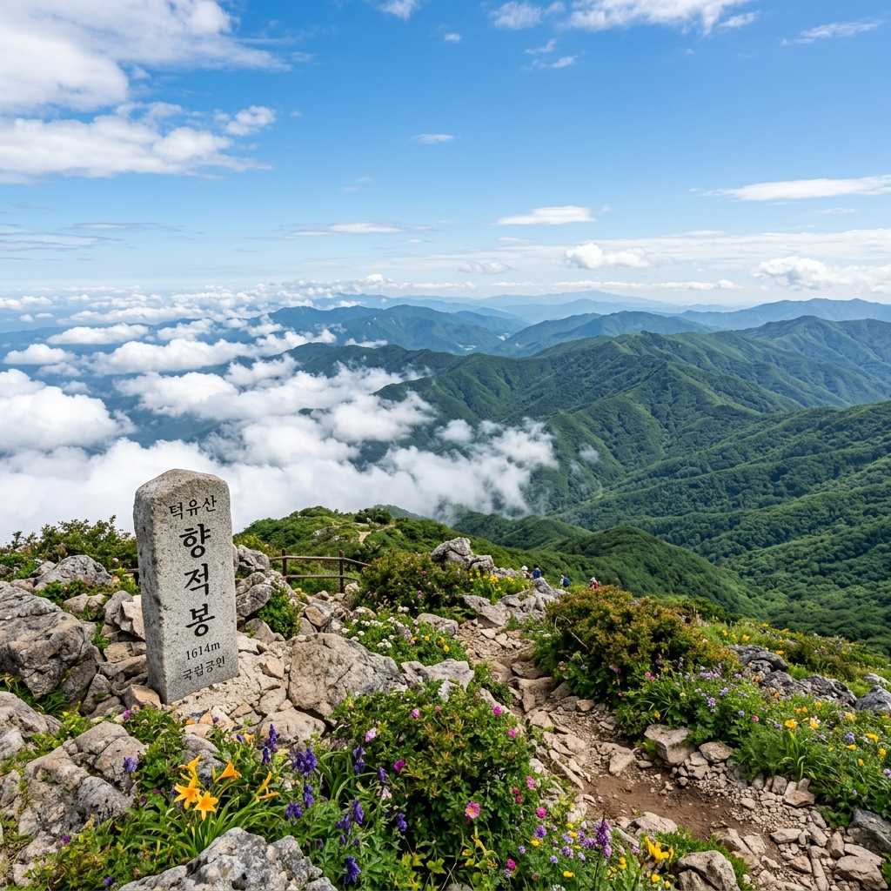

무주 구천동과 덕유산 곤돌라는 모든 분께 100% 추천하기 어렵습니다. 기대치를 맞추는 것이 중요하기 때문에, 먼저 솔직하게 구분해 드립니다.
이런 분께 강력 추천합니다
수온 낮은 계곡에서 쉬고 싶은 분, 산 정상에서 고산 야생화와 탁 트인 능선 전망을 보고 싶은 분, 등산 체력 없이도 해발 1,500m 이상 고지대를 경험하고 싶은 분, 반딧불이 서식지로 유명한 청정 환경을 찾는 분에게 적합합니다.
이런 분께는 비추천합니다
여름 성수기 주말에 즉흥적으로 방문하려는 분은 곤돌라 대기가 길어 실망할 수 있습니다. 대중교통으로 편하게 이동하고 싶은 분에게도 불편한 편입니다. 화려한 볼거리나 놀이시설을 기대하는 분보다는, 자연 그대로의 숲과 계곡을 감상하는 데 익숙한 분께 맞는 여행지입니다.
덕유산 설천봉까지 오르는 관광곤돌라는 무주덕유산리조트가 운영합니다. 탑승 전 꼭 확인해야 할 내용을 정리했습니다.
| 항목 | 내용 |
|---|---|
| 운행 기간 | 5월 ~ 10월 (스키 시즌 외) |
| 평일 운행 | 10:00 ~ 16:00 (하행 마감 16:30) |
| 주말·공휴일 운행 | 09:00 ~ 17:00 (하행 마감 17:30) |
| 대인 왕복 요금 | 25,000원 |
| 소인 왕복 요금 | 20,000원 (36개월~초등학생) |
| 주말 예약 | 탑승 2주 전 17:00 오픈 (홈페이지 예약 필수) |
주말에는 현장 발권 없이 예약자만 탑승 가능합니다. 평일은 현장 발권이 가능하나 성수기에는 대기가 생길 수 있습니다.

곤돌라에서 내린 설천봉(해발 1,520m)에서 향적봉(해발 1,614m)까지는 도보로 약 15분 거리입니다.
탁 트인 능선 위에서 내려다보면 주변 산줄기가 파도처럼 겹쳐 이어집니다. 한낮 기온이 35°C를 넘는 폭염 시기에도 이곳 정상은 25°C 안팎으로 서늘합니다.
향적봉 정상 부근의 향적봉 대피소에서는 라면, 컵밥 등 간단한 식사를 구매할 수 있습니다. 고도가 높아 물이 100°C 이하에서 끓어오르기 때문에 라면 면발이 살짝 덜 익히는 특성이 있는데, 그럼에도 고산에서 먹는 따끈한 한 끼는 별미입니다.
체력에 여유가 있다면 설천봉에서 중봉(해발 1,594m) 방향으로 이어지는 능선 트레킹(약 2시간)도 추천합니다. 호남 제일의 고원 초원 능선이 여름 내내 짙은 녹색으로 펼쳐지는 구간입니다.
구천동 33경은 전체 36km 구간이지만, 대부분의 방문객은 나제통문(제1경)에서 탐방지원센터 일대까지 약 4~7km의 하부 코스를 선택합니다.
평탄한 데크 산책로가 잘 조성되어 있어 유모차와 휠체어도 진입 가능한 구간이 다수입니다. 어르신이나 어린이 동반 가족도 부담 없이 걸을 수 있습니다.
계곡 수온이 12~16°C를 유지하기 때문에 걷다가 발을 담그는 것만으로도 더위가 식습니다. 구월담(제7경)과 인월담(제8경) 일대가 물가에서 쉬기 좋은 명소입니다.
구천동폭포(제10경)까지는 약 1시간 거리입니다. 폭포 아래 소에서는 짙은 물안개가 피어올라 한여름에도 서늘한 공기를 느낄 수 있습니다.
① 나제통문(제1경): 삼국시대 경계 바위 터널로, 구천동 관문 역할을 합니다. 사진 명소이자 차량 진입로 바로 옆에 있어 접근이 편리합니다.
② 구월담(제7경): 폭포 아래 형성된 잔잔한 소로, 물놀이 최적 지점으로 알려져 있습니다.
③ 구천동폭포(제10경): 높이 15m 은빛 물줄기가 인상적인 구천동 최대 폭포입니다.
④ 안국사(제25경): 향적봉 아래 자리한 천년 사찰로, 고요한 분위기에서 잠시 쉬어 가기 좋습니다.
⑤ 구천동 탐방지원센터 일대: 무료 주차, 화장실, 음수대가 갖춰진 핵심 베이스캠프입니다.

가족 동반 추천 동선
오전 9시 전 나제통문 도착 → 구천동어사길 데크 산책(왕복 2km, 1시간) → 탐방지원센터 물놀이 → 점심 → 설천봉 곤돌라 탑승(예약 필수) → 향적봉 산책 → 하산 후 무주 읍내 저녁
트레킹 선호 동선
33경 하부 트레킹(4~7km, 2~3시간) → 구천동폭포까지 왕복 → 점심 → 설천봉 곤돌라 → 중봉 능선(체력 여유 있을 때) → 곤돌라 하산
구천동 계곡 물은 맑고 아름다워 보이지만, 여름 집중호우 뒤에는 수위가 빠르게 오를 수 있습니다.
탐방지원센터에서 안내하는 지정 물놀이 구역에서만 수영하시고, 기상특보 발령 시에는 계곡 진입을 자제하시기 바랍니다. 맑은 물이라도 수심 변화와 소용돌이 지점이 있을 수 있으니 어린이는 보호자가 항상 곁에 있어야 합니다.
덕유산은 여름 오후에 급격한 기상 변화가 잦습니다. 곤돌라 운행 중단 시에는 하행 곤돌라가 운행되지 않아 등산로로 하산해야 하는 상황이 생길 수 있으므로, 방문 당일 기상 예보를 반드시 확인하세요.
서울에서 출발하면 경부·호남고속도로를 통해 약 2시간 30분~3시간이 소요됩니다. 대중교통으로는 무주 시외버스터미널까지 간 뒤 농어촌버스나 택시를 이용해야 합니다.
구천동 주차장은 여름 성수기 주말에 오전 9시 이전에 만차가 될 수 있습니다. 나제통문 인근 임시 주차장을 이용하거나, 오전 7시 이전 도착을 목표로 하는 것이 현실적입니다.
구천동 계곡 주변에는 민물고기 매운탕, 어죽(魚粥), 산채비빔밥을 내는 음식점이 많습니다. 이 지역 특산인 어죽은 민물고기를 오래 고아 쌀과 함께 끓인 향토 음식으로, 한 끼 1만~1만 5천 원대에서 즐길 수 있습니다.
여름 성수기(7월 마지막 주~8월) 숙박은 최소 3~4주 전 예약을 추천합니다. 계곡 바로 옆 펜션과 민박이 많으며, 무주덕유산리조트 내 콘도미니엄은 부대시설이 잘 갖춰져 있어 가족 단위에 인기입니다.
무주는 국내 유일의 반딧불이 자연 서식지입니다. 7월 밤 구천동 주변 산책로를 걸으면 자연 상태의 반딧불이를 만날 확률이 있습니다.
매년 8월 말~9월 초 무주 반딧불이 축제가 열리며, 정확한 일정은 무주군 문화관광 홈페이지(tour.muju.go.kr)에서 발행 직전 재확인하시기 바랍니다.
